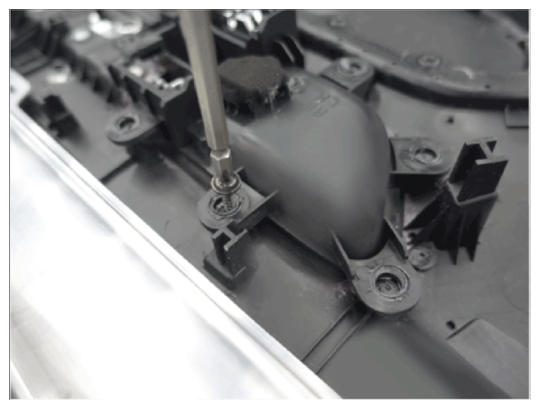
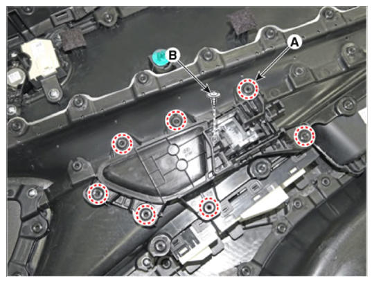

LEMON Manuals
: Even more car manuals for everyone: 1960-2025
Home
>>
Hyundai
>>
2022
>>
Elantra N Line, Standard Trans
>>
Repair and Diagnosis (Single Page)
>>
Body & Frame
>>
Exterior Body Panels
>>
Front Door Assembly (Except HEV)
>>
Front Door Inside Handle
>>
Repair Procedures
>>
Installation
Repair Procedures: Installation
Install the front door inside handle.
A screw is attached to the cut heat-welded portion.
CAUTION:
Because there is no groove to attach the screw to the heat weld, install the screwdriver in a straight line.

Courtesy of HYUNDAI MOTOR AMERICA

Courtesy of HYUNDAI MOTOR AMERICA
Information
Front door inside handle mounting screw
M5, 8 mm (7ea)
Existing screw (M3, 1ea)